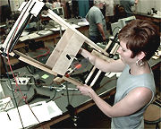

|

CARLOS ORTIZ
Franklin biology teacher Susan Clark works on a project to study the angle at which cosmic rays travel. Clark and 11 others are attending the University of Rochester's Quarknet program. |
(August 10, 2000) -- Twelve area physics teachers have headed back to the classroom a few weeks early, but not to teach. They're in class as students.
For the past week and a half, the teachers -- from Rochester, Pittsford, Naples, Ontario County, and Geneseo, Livingston County -- have been attending the Quarknet program at the University of Rochester to learn about the latest trends in modern physics. This is the program's first year.
The teachers will take what they have learned back to their classrooms to share with their physics students.
Margaret Kretow, a teacher at the School of the Arts, said she is having fun being a student.
"I'm learning a heck of a lot. I'm so used to teaching classical physics. I'm getting really enlightened," she said.
Classes began July 31 and will end Tuesday, but the teachers will continue to meet during the school year for follow-up discussions about how they incorporated new learning into their curriculum. They also want to assess what worked and what didn't work.
Kevin McFarland, a physics professor at the University of Rochester who is co-chair of the program, said the use of modern research is lacking in high school physics classes.
"This will give them something related to on-going research to bring back to their classroom," McFarland said.
The teachers built their own cosmic ray telescopes from raw materials to learn about the physics involved, and analyzed the information they collected.
One pair of teachers studied the effect of lead on cosmic rays, another worked to see whether a magnetic force would bend the rays.
A computer attached to the detectors is used to compile the data.
Once the course is completed, the detectors become part of an equipment lending library in the physics and astronomy department, so any teacher can borrow a detector for weeks at a time and demonstrate it to his or her class.
John D'Onofrio, a physics teacher at Geneseo Central High School, said he is excited about getting a taste of what he calls "big physics."
"In the high school class, you got little stuff to play with. Now we have equipment that we can borrow to show our students how it works."